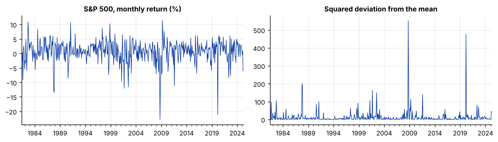
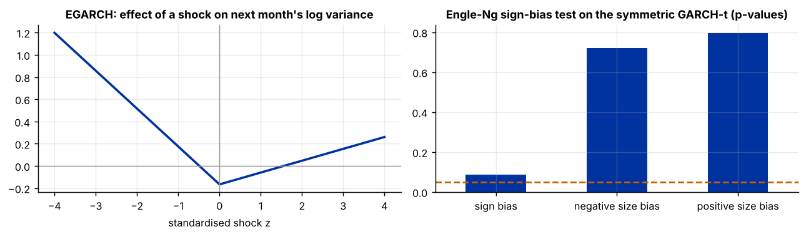
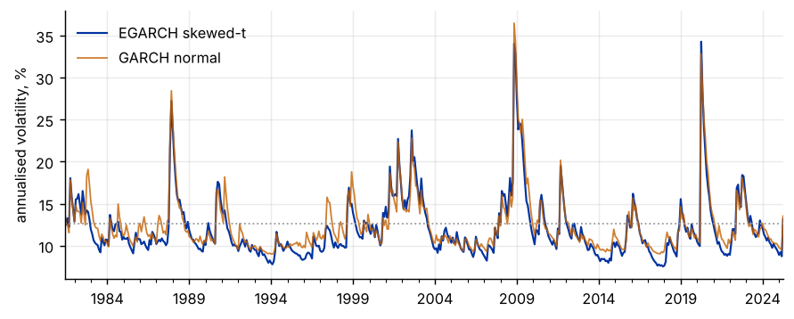
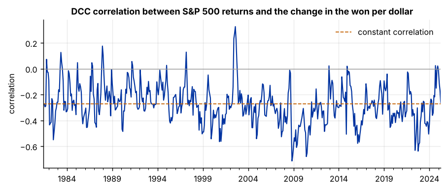

Step 1The question and the model
Large moves tend to follow large moves, and calm periods follow calm periods. A regression with a constant variance ignores this, so its standard errors, its forecast intervals and any risk number built on it can be wrong. Our question is: does the volatility of U.S. stock returns change over time, do falling markets raise it more than rising markets, and does the correlation between U.S. stocks and the Korean won move too?
The returns are \(r_t = \mu + \varepsilon_t\) with \(\varepsilon_t = \sigma_t z_t\), where \(z_t\) is an independent standardised shock and the conditional variance \(\sigma_t^2\) follows one of these processes:
| Symbol | Meaning | What to expect |
|---|---|---|
| \(\alpha\) | reaction to last period's shock | larger means volatility jumps after big shocks |
| \(\beta\) | persistence of volatility | close to one means volatility decays slowly |
| \(\gamma\) | asymmetry | for stocks, bad news raises volatility more than good news (the leverage effect) |
| \(\nu\) | degrees of freedom of the Student-\(t\) shock | small values mean fat tails |
For two series, the DCC model of Engle (2002) first fits a GARCH model to each series, then lets the correlation of the standardised shocks follow \(Q_t = (1-a-b)\bar Q + a\, z_{t-1}z_{t-1}' + b\, Q_{t-1}\), with the correlation matrix \(R_t\) obtained by rescaling \(Q_t\).
Before you estimate anything
State what the volatility model is for: a better standard error for a regression, a risk measure, a forecast, or a result in itself, such as the leverage effect. The first needs only a correct variance model, the second needs a good tail distribution, and the third needs an asymmetric model. Say which one your paper needs.
How to write it: model section
We model monthly returns as \(r_t = \mu + \sigma_t z_t\), where the conditional variance follows a GARCH(1,1), GJR-GARCH(1,1) or EGARCH(1,1) process and \(z_t\) has a Student-\(t\) or skewed Student-\(t\) distribution. The specification is chosen by the Bayesian information criterion, estimated by quasi-maximum likelihood, and checked with tests on the standardised residuals. To study co-movement with the Korean won we estimate the dynamic conditional correlation model of Engle (2002) in two steps.
Step 2Load the data and look at the returns
import warnings; warnings.filterwarnings("ignore")
import numpy as np, pandas as pd
import matplotlib.pyplot as plt
d = pd.read_csv("markets.csv", parse_dates=["date"]).set_index("date")
r = d.sp500_return # monthly log return of the S&P 500, percent
print(d.index[0].strftime("%Y-%m"), "to", d.index[-1].strftime("%Y-%m"), "|", len(d), "months")
st = d.agg(["mean", "std", "min", "max", "skew", "kurt"]).T
print(st.round(2))
print("\nLargest falls of the S&P 500:")
print(r.nsmallest(3).round(1).to_string())
fig, ax = plt.subplots(1, 2, figsize=(10, 2.9))
r.plot(ax=ax[0], lw=.7, title="S&P 500, monthly return (%)"); ax[0].set_xlabel("")
(r - r.mean()).pow(2).plot(ax=ax[1], lw=.7, title="Squared deviation from the mean"); ax[1].set_xlabel("")
plt.tight_layout()1981-06 to 2025-04 | 527 months
mean std min max skew kurt
sp500_return 0.70 3.65 -22.80 11.35 -1.43 6.47
krw_change 0.14 2.61 -8.93 36.88 5.83 77.99
Largest falls of the S&P 500:
date
2008-10-01 -22.8
2020-03-01 -21.2
1987-11-01 -13.4
How to read it
The sample has 527 months, from 1981-06 to 2025-04. U.S. stock returns average 0.70% a month with a standard deviation of 3.65%. They are skewed to the left (skewness −1.43) and have fat tails (excess kurtosis 6.47). The three largest falls are 2008-10 (−22.8%), 2020-03 (−21.2%) and 1987-11 (−13.4%), and the squared deviations on the right cluster around these episodes. The won is even more extreme: its excess kurtosis is 78 because of one month, the Asian crisis of December 1997, when the won lost 36.9% against the dollar. Both patterns, clusters and fat tails, are what a volatility model should capture.
Step 3Test for time-varying volatility
from statsmodels.stats.diagnostic import het_arch, acorr_ljungbox
rows = []
for name in ["sp500_return", "krw_change"]:
e = d[name] - d[name].mean()
row = {"series": name}
for L in (1, 3, 6, 12):
row[f"ARCH-LM({L})"] = het_arch(e, nlags=L)[1]
row["Ljung-Box e^2 (12)"] = acorr_ljungbox(e ** 2, lags=[12], return_df=True).lb_pvalue.iloc[0]
rows.append(row)
print("p-values of tests of constant variance (H0: no ARCH effects)")
print(pd.DataFrame(rows).set_index("series").round(3).to_string())p-values of tests of constant variance (H0: no ARCH effects)
ARCH-LM(1) ARCH-LM(3) ARCH-LM(6) ARCH-LM(12) Ljung-Box e^2 (12)
series
sp500_return 0.003 0.022 0.019 0.165 0.082
krw_change 0.000 0.000 0.001 0.016 0.008How to read it
For the won, constant variance is rejected at every lag (p below 0.001 at 1, 3 and 6 lags and 0.016 at 12 lags). For U.S. stocks the evidence is weaker: p = 0.003, 0.022 and 0.019 at 1, 3 and 6 lags, but 0.165 at 12 lags, and the Ljung–Box test on the squares gives 0.082. The test loses power when it uses many lags, and monthly aggregation weakens volatility clustering. Do not stop here. A likelihood-based comparison, in the next step, is more powerful. Report the tests at several lags, not at one chosen after the fact.
Step 4Choose the specification
from arch import arch_model
specs = {"Constant variance, normal": dict(vol="Constant", dist="normal"),
"Constant variance, t": dict(vol="Constant", dist="t"),
"GARCH, normal": dict(vol="GARCH", p=1, q=1, dist="normal"),
"GARCH, t": dict(vol="GARCH", p=1, q=1, dist="t"),
"GJR, t": dict(vol="GARCH", p=1, o=1, q=1, dist="t"),
"EGARCH, t": dict(vol="EGARCH", p=1, o=1, q=1, dist="t"),
"GJR, skewed t": dict(vol="GARCH", p=1, o=1, q=1, dist="skewt"),
"EGARCH, skewed t": dict(vol="EGARCH", p=1, o=1, q=1, dist="skewt")}
fits = {k: arch_model(r, mean="Constant", **kw).fit(disp="off") for k, kw in specs.items()}
tab = pd.DataFrame({"parameters": {k: len(f.params) for k, f in fits.items()},
"log-likelihood": {k: f.loglikelihood for k, f in fits.items()},
"AIC": {k: f.aic for k, f in fits.items()}, "BIC": {k: f.bic for k, f in fits.items()}})
print(tab.round(1).to_string())
print("\nBest by BIC:", tab.BIC.idxmin(), " best by AIC:", tab.AIC.idxmin())
lr = 2 * (fits["GARCH, t"].loglikelihood - fits["Constant variance, t"].loglikelihood)
print(f"\nLikelihood-ratio test, GARCH(1,1) against constant variance (both with t errors): {lr:.1f}")parameters log-likelihood AIC BIC Constant variance, normal 2 -1429.0 2861.9 2870.5 Constant variance, t 3 -1380.4 2766.7 2779.5 GARCH, normal 4 -1408.2 2824.5 2841.5 GARCH, t 5 -1365.1 2740.3 2761.6 GJR, t 6 -1360.4 2732.8 2758.4 EGARCH, t 6 -1358.0 2728.0 2753.7 GJR, skewed t 7 -1352.8 2719.6 2749.4 EGARCH, skewed t 7 -1349.5 2713.0 2742.8 Best by BIC: EGARCH, skewed t best by AIC: EGARCH, skewed t Likelihood-ratio test, GARCH(1,1) against constant variance (both with t errors): 30.4
How to read it
Three things stand out. First, the error distribution matters most: moving from normal to Student-\(t\) errors in the GARCH model raises the log-likelihood by 43 points (−1408.2 to −1365.1) for one extra parameter. Second, volatility clustering is present beyond fat tails: a GARCH(1,1) raises the log-likelihood by 15.3 points over a constant variance with the same \(t\) errors, a likelihood-ratio statistic of 30.4. Its asymptotic distribution is not the usual \(\chi^2\), because the parameters lie at the edge of the parameter space under the null, but the statistic is far above any reasonable critical value. Third, asymmetry and skewness both help: GJR and EGARCH improve on the symmetric GARCH-\(t\), and skewed-\(t\) errors improve on \(t\) errors. The EGARCH with skewed-\(t\) errors has the lowest AIC (2713.0) and the lowest BIC (2742.8), so we use it.
Step 5Estimate the chosen model
m = fits["EGARCH, skewed t"]
print(m.summary().tables[1]); print(m.summary().tables[2]); print(m.summary().tables[3])
p = m.params
print(f"\nPersistence (beta): {p['beta[1]']:.3f} half-life of a volatility shock: {np.log(.5) / np.log(p['beta[1]']):.1f} months")
z = m.std_resid.dropna()
Eabs = np.mean(np.abs(z))
neg = p["alpha[1]"] * (2 - Eabs) - p["gamma[1]"] * 2 # effect of z = -2 on next month's log variance
pos = p["alpha[1]"] * (2 - Eabs) + p["gamma[1]"] * 2 # effect of z = +2
print(f"Effect on log variance of a -2 shock: {neg:.3f} (variance x {np.exp(neg):.2f}) of a +2 shock: {pos:.3f} (variance x {np.exp(pos):.2f})") Mean Model
========================================================================
coef std err t P>|t| 95.0% Conf. Int.
------------------------------------------------------------------------
mu 0.7851 0.161 4.880 1.062e-06 [ 0.470, 1.100]
========================================================================
Volatility Model
===========================================================================
coef std err t P>|t| 95.0% Conf. Int.
---------------------------------------------------------------------------
omega 0.2964 0.124 2.386 1.702e-02 [5.297e-02, 0.540]
alpha[1] 0.2239 5.525e-02 4.053 5.059e-05 [ 0.116, 0.332]
gamma[1] -0.1173 5.926e-02 -1.979 4.785e-02 [ -0.233,-1.108e-03]
beta[1] 0.8819 5.414e-02 16.290 1.167e-59 [ 0.776, 0.988]
===========================================================================
Distribution
========================================================================
coef std err t P>|t| 95.0% Conf. Int.
------------------------------------------------------------------------
eta 5.4108 1.370 3.951 7.791e-05 [ 2.726, 8.095]
lambda -0.2808 7.243e-02 -3.877 1.059e-04 [ -0.423, -0.139]
========================================================================
Persistence (beta): 0.882 half-life of a volatility shock: 5.5 months
Effect on log variance of a -2 shock: 0.516 (variance x 1.68) of a +2 shock: 0.047 (variance x 1.05)How to read it
The persistence is \(\hat\beta = 0.882\) (standard error 0.054), so a shock to volatility loses half of its effect in 5.5 months, and \(\hat\alpha = 0.224\) (s.e. 0.055) says that large shocks, of either sign, raise volatility. The leverage term is \(\hat\gamma = -0.117\) (s.e. 0.059, p = 0.048), significant at 5% but with a confidence interval that nearly reaches zero. In EGARCH a negative \(\gamma\) means that bad news raises volatility more than good news. A \(-2\) shock raises next month's log variance by 0.52, which multiplies the variance by 1.68. A \(+2\) shock raises it by 0.05, a factor of 1.05. The distribution table shows fat tails (the degrees-of-freedom parameter \(\eta\) is about 5.4) and a negative skewness parameter \(\lambda\).
How to write it: results
The EGARCH(1,1) model with skewed Student-\(t\) errors has a persistence parameter \(\hat\beta = 0.882\) (s.e. 0.054), so a volatility shock has a half-life of 5.5 months. The coefficient on the size of the shock is \(\hat\alpha = 0.224\) (s.e. 0.055). The leverage term is \(\hat\gamma = -0.117\) (s.e. 0.059): a standardised shock of \(-2\) raises next month's variance by 68%, while a shock of \(+2\) raises it by 5%. The shocks have fat tails (\(\hat\eta = 5.4\) degrees of freedom) and are skewed to the left.
Step 6Asymmetry: the effect of good and bad news
zz = np.linspace(-4, 4, 161)
resp = p["alpha[1]"] * (np.abs(zz) - Eabs) + p["gamma[1]"] * zz
fig, ax = plt.subplots(1, 2, figsize=(10, 3.0))
ax[0].plot(zz, resp, lw=2); ax[0].axhline(0, color="#999", lw=.8); ax[0].axvline(0, color="#999", lw=.8)
ax[0].set_title("EGARCH: effect of a shock on next month's log variance"); ax[0].set_xlabel("standardised shock z")
g = fits["GARCH, t"].std_resid.dropna()
sb = pd.DataFrame({"y": g.values[1:] ** 2, "neg": (g.values[:-1] < 0).astype(float)})
sb["negsize"] = sb.neg * g.values[:-1]; sb["possize"] = (1 - sb.neg) * g.values[:-1]
import statsmodels.formula.api as smf
sbt = smf.ols("y ~ neg + negsize + possize", sb).fit()
pd.Series({"sign bias": sbt.pvalues["neg"], "negative size bias": sbt.pvalues["negsize"], "positive size bias": sbt.pvalues["possize"]}).plot.bar(ax=ax[1], rot=0)
ax[1].axhline(.05, color="#c46000", ls="--"); ax[1].set_title("Engle-Ng sign-bias test on the symmetric GARCH-t (p-values)")
plt.tight_layout()
print(sbt.summary().tables[1])
gj = fits["GJR, t"]
print(f"GJR-t leverage term gamma = {gj.params['gamma[1]']:.3f}, p-value = {gj.pvalues['gamma[1]']:.3f}")
print("Joint F-test of the three terms: F = %.2f, p = %.4f" % (sbt.fvalue, sbt.f_pvalue))==============================================================================
coef std err t P>|t| [0.025 0.975]
------------------------------------------------------------------------------
Intercept 0.7279 0.331 2.197 0.028 0.077 1.379
neg 0.7336 0.428 1.715 0.087 -0.107 1.574
negsize 0.0809 0.226 0.358 0.721 -0.364 0.525
possize -0.1102 0.424 -0.260 0.795 -0.943 0.723
==============================================================================
GJR-t leverage term gamma = 0.289, p-value = 0.016
Joint F-test of the three terms: F = 2.36, p = 0.0706
How to read it
The left panel shows the response implied by the EGARCH estimates: it is steep for negative shocks and much flatter for positive ones. The evidence on asymmetry is real but moderate. The EGARCH leverage term has p = 0.048 and the GJR leverage term has a p-value of 0.016, but the Engle–Ng sign-bias test on the symmetric GARCH-\(t\) has a joint p-value of 0.071, and none of its three terms is individually significant at 5%. The information criteria favour the asymmetric models. Report the leverage effect as present but not precisely estimated, which is also what the wide confidence interval of \(\gamma\) says.
Step 7Check the standardised residuals
from scipy import stats
zs = m.std_resid.dropna()
print("Tests on the standardised residuals of the chosen model (p-values)")
print(f" Ljung-Box on z (12 lags): {acorr_ljungbox(zs, lags=[12], return_df=True).lb_pvalue.iloc[0]:.3f} (no leftover autocorrelation if above 0.05)")
print(f" Ljung-Box on z^2 (12 lags): {acorr_ljungbox(zs ** 2, lags=[12], return_df=True).lb_pvalue.iloc[0]:.3f} (no leftover volatility clustering if above 0.05)")
print(f" ARCH-LM (12 lags): {het_arch(zs, nlags=12)[1]:.3f}")
print(f" Skewness {stats.skew(zs):.2f} excess kurtosis {stats.kurtosis(zs):.2f}")
vol = (m.conditional_volatility * np.sqrt(12)).rename("EGARCH skewed-t")
vol_g = (fits["GARCH, normal"].conditional_volatility * np.sqrt(12)).rename("GARCH normal")
fig, ax = plt.subplots(figsize=(8, 3.0))
vol.plot(ax=ax, lw=1.2); vol_g.plot(ax=ax, lw=1, alpha=.8); ax.axhline(r.std() * np.sqrt(12), color="#999", ls=":", lw=1)
ax.set_xlabel(""); ax.set_ylabel("annualised volatility, %"); ax.legend(frameon=False)
print(f"\nAnnualised volatility: lowest {vol.min():.1f}% ({vol.idxmin():%Y-%m}), highest {vol.max():.1f}% ({vol.idxmax():%Y-%m}), constant-variance estimate {r.std() * np.sqrt(12):.1f}%")Tests on the standardised residuals of the chosen model (p-values) Ljung-Box on z (12 lags): 0.103 (no leftover autocorrelation if above 0.05) Ljung-Box on z^2 (12 lags): 1.000 (no leftover volatility clustering if above 0.05) ARCH-LM (12 lags): 1.000 Skewness -1.41 excess kurtosis 6.77 Annualised volatility: lowest 7.5% (2017-12), highest 34.3% (2020-04), constant-variance estimate 12.6%

How to read it
The model removes the volatility clustering: the Ljung–Box test on the squared standardised residuals gives p = 1.000 and the ARCH-LM test p = 1.000, because the autocorrelations of the squares are all within 0.03 of zero. There is no leftover autocorrelation in the residuals themselves (p = 0.103). The standardised residuals are still left-skewed (−1.41) with excess kurtosis of 6.8, because a handful of months remain extreme, above all March 2020, when the standardised shock was −7.6. The conditional volatility ranges from 7.5% a year in December 2017 to 34.3% in April 2020, against a constant-variance estimate of 12.6%. The figure shows the volatility rising in 1987, 2008 and 2020 and falling in the calm years that follow.
Step 8Do the forecasts and the risk numbers improve?
import statsmodels.api as sm
fspecs = {"GARCH, t": dict(vol="GARCH", p=1, q=1, dist="t"),
"GJR, t": dict(vol="GARCH", p=1, o=1, q=1, dist="t"),
"EGARCH, skewed t": dict(vol="EGARCH", p=1, o=1, q=1, dist="skewt")}
rows = []
for o in r["2010-01":"2025-03"].index: # expanding window, re-estimated every month
y = r[:o]
row = {"date": o + pd.DateOffset(months=1), "const_h": y.var(), "const_mu": y.mean(), "const_q": stats.norm.ppf(.05)}
for k, kw in fspecs.items():
f = arch_model(y, mean="Constant", **kw).fit(disp="off", show_warning=False)
fc = f.forecast(horizon=1)
dist = f.model.distribution
row[k + "_h"], row[k + "_mu"] = float(fc.variance.iloc[-1, 0]), float(fc.mean.iloc[-1, 0])
row[k + "_q"] = float(dist.ppf(.05, f.params[dist.parameter_names()].values))
rows.append(row)
F = pd.DataFrame(rows).set_index("date")
actual = r.reindex(F.index)
names = {"const": "Constant variance", **{k: k for k in fspecs}}
e2 = pd.Series({t: (actual[t] - F.const_mu[t]) ** 2 for t in F.index}) # proxy for the realised variance
ql = pd.DataFrame({n: np.log(F[k + "_h"]) + e2 / F[k + "_h"] for k, n in names.items()}) # QLIKE loss
no20 = F.index.year != 2020
out = pd.DataFrame({"QLIKE, all months": ql.mean(), "QLIKE, excluding 2020": ql[no20].mean()})
dm_p = {}
for n in ql:
if n == "Constant variance":
continue
res = sm.OLS((ql[n] - ql["Constant variance"]).values, np.ones(len(ql))).fit(cov_type="HAC", cov_kwds={"maxlags": 3})
dm_p[n] = res.pvalues[0]
out["Diebold-Mariano p-value vs constant"] = pd.Series(dm_p)
print(f"One-month-ahead variance forecasts, {len(F)} months, 2010-04 to 2025-04 (lower QLIKE is better)")
print(out.round(3).to_string())
def kupiec(x, n, p=.05):
ll = lambda q: (n - x) * np.log(1 - q) + x * np.log(q) if 0 < x < n else 0.0
lr = -2 * (ll(p) - ll(x / n)); return 1 - stats.chi2.cdf(lr, 1)
vr = []
for k, n in names.items():
var = F[k + "_mu"] + np.sqrt(F[k + "_h"]) * F[k + "_q"]
hit = (actual < var)
vr.append((n, round(float(var.mean()), 2), int(hit.sum()), round(hit.mean(), 3), round(kupiec(hit.sum(), len(hit)), 3)))
print("\n5% one-month value-at-risk: average VaR (%), violations, violation rate, Kupiec p-value")
print(pd.DataFrame(vr, columns=["model", "mean VaR", "violations", "rate", "Kupiec p"]).to_string(index=False))One-month-ahead variance forecasts, 183 months, 2010-04 to 2025-04 (lower QLIKE is better)
QLIKE, all months QLIKE, excluding 2020 Diebold-Mariano p-value vs constant
Constant variance 3.466 3.250 NaN
GARCH, t 3.531 3.162 0.647
GJR, t 3.542 3.129 0.676
EGARCH, skewed t 3.518 3.135 0.745
5% one-month value-at-risk: average VaR (%), violations, violation rate, Kupiec p-value
model mean VaR violations rate Kupiec p
Constant variance -5.37 9 0.049 0.959
GARCH, t -4.22 14 0.077 0.126
GJR, t -4.34 12 0.066 0.355
EGARCH, skewed t -4.94 12 0.066 0.355How to read it
The result is mixed, and it is worth reporting as it is. Over all 183 months the constant variance has the lowest QLIKE loss (3.466 against 3.518 to 3.542), because March 2020 dominates the comparison: the GARCH models had forecast a calm month and then faced a fall of 21%. Excluding 2020 the ranking reverses and the GARCH models are better (3.129 to 3.162 against 3.250). The Diebold–Mariano tests do not reject equal accuracy in either direction (p between 0.65 and 0.75 over the full sample). The value-at-risk backtest tells a similar story. The constant-variance VaR is violated in 9 months of 183 (4.9%), exactly the nominal rate. The GARCH VaRs are narrower on average (−4.2% to −4.9% against −5.4%) and are violated 12 to 14 times (6.6% to 7.7%). None of the Kupiec tests rejects the 5% rate, but the GARCH-t is the closest to doing so (p = 0.126). The lesson is that at the monthly frequency the in-sample gain is clear and the out-of-sample gain is not. Volatility models usually earn more at daily or weekly frequency, where clustering is stronger.
How to write it: forecast evaluation
We evaluate one-month-ahead variance forecasts with an expanding window from April 2010 to April 2025 (183 forecasts), re-estimating each model every month. Using the QLIKE loss, the GARCH-family models improve on a constant variance once March 2020 is excluded (3.13 to 3.16 against 3.25), but not over the full sample (3.52 to 3.54 against 3.47), and the Diebold–Mariano tests do not reject equal accuracy (p between 0.65 and 0.75). The 5% value-at-risk of every model passes the Kupiec test, although the GARCH models have more violations (12 to 14 of 183) than the 9 expected.
Step 9Time-varying correlation with the Korean won (DCC)
from scipy.optimize import minimize
f_krw = arch_model(d.krw_change, mean="Constant", vol="EGARCH", p=1, o=1, q=1, dist="t").fit(disp="off")
print("Step 1. Univariate model for the won (percent change of won per dollar; positive = won weakens)")
print(f_krw.params.round(3).to_string())
Z = pd.concat([m.std_resid, f_krw.std_resid], axis=1).dropna().values # standardised shocks of the two series
T = len(Z); Qbar = np.cov(Z.T)
def corr_path(a, b):
q11, q12, q22 = Qbar[0, 0], Qbar[0, 1], Qbar[1, 1]; rho = np.empty(T)
for t in range(T):
if t > 0:
q11 = (1 - a - b) * Qbar[0, 0] + a * Z[t - 1, 0] ** 2 + b * q11
q22 = (1 - a - b) * Qbar[1, 1] + a * Z[t - 1, 1] ** 2 + b * q22
q12 = (1 - a - b) * Qbar[0, 1] + a * Z[t - 1, 0] * Z[t - 1, 1] + b * q12
rho[t] = q12 / np.sqrt(q11 * q22)
return rho
def negll(par):
a, b = par
if a < 0 or b < 0 or a + b >= .9999:
return 1e10
rho = corr_path(a, b)
return 0.5 * np.sum(np.log(1 - rho ** 2) + (Z[:, 0] ** 2 + Z[:, 1] ** 2 - 2 * rho * Z[:, 0] * Z[:, 1]) / (1 - rho ** 2) - (Z ** 2).sum(1))
best = min((minimize(negll, s, method="Nelder-Mead", options=dict(xatol=1e-6, fatol=1e-9)) for s in [(.02, .95), (.05, .9), (.1, .8)]), key=lambda o: o.fun)
a, b = best.x
LR = 2 * (negll((0, 0)) - best.fun)
rho = pd.Series(corr_path(a, b), index=pd.concat([m.std_resid, f_krw.std_resid], axis=1).dropna().index)
print(f"\nStep 2. DCC parameters: a = {a:.3f}, b = {b:.3f}, a + b = {a + b:.3f}")
print(f"Likelihood-ratio test against a constant correlation (a = b = 0): {LR:.1f} p-value = {1 - stats.chi2.cdf(LR, 2):.4f}")
print(f"Constant correlation of the shocks: {np.corrcoef(Z.T)[0, 1]:.2f}")
print(f"Dynamic correlation: mean {rho.mean():.2f}, lowest {rho.min():.2f} ({rho.idxmin():%Y-%m}), highest {rho.max():.2f} ({rho.idxmax():%Y-%m})")
fig, ax = plt.subplots(figsize=(8, 3.0))
rho.plot(ax=ax, lw=1.2); ax.axhline(0, color="#999", lw=.8); ax.axhline(np.corrcoef(Z.T)[0, 1], color="#c46000", ls="--", lw=1, label="constant correlation")
ax.set_xlabel(""); ax.set_ylabel("correlation"); ax.set_title("DCC correlation between S&P 500 returns and the change in the won per dollar"); ax.legend(frameon=False)Step 1. Univariate model for the won (percent change of won per dollar; positive = won weakens) mu 0.151 omega 0.101 alpha[1] 0.649 gamma[1] 0.060 beta[1] 0.938 nu 4.642 Step 2. DCC parameters: a = 0.157, b = 0.606, a + b = 0.764 Likelihood-ratio test against a constant correlation (a = b = 0): 15.7 p-value = 0.0004 Constant correlation of the shocks: -0.27 Dynamic correlation: mean -0.27, lowest -0.71 (2008-11), highest 0.33 (2002-08)

How to read it
The won has strong volatility clustering (\(\hat\alpha = 0.65\), \(\hat\beta = 0.94\) in its EGARCH). The DCC parameters are \(\hat a = 0.157\) and \(\hat b = 0.606\). Their sum, 0.764, is well below one, so the correlation returns to its long-run level within a few months (a half-life of about 2.6 months). The likelihood-ratio test of a constant correlation gives 15.7 (p = 0.0004). As in the GARCH test, the usual \(\chi^2\) distribution is only an approximation because the parameters are on the boundary under the null, but the value is large. The correlation is negative on average (−0.27): the won weakens against the dollar when U.S. stocks fall. It was strongest in the global financial crisis (−0.71 in 2008-11) and turned positive in 2002. If you use the DCC, report the constant correlation next to it, as the dashed line does, so that a reader can see how much the dynamics add.
How to write it: correlation
The dynamic conditional correlation between U.S. stock returns and the change in the won per dollar has parameters \(\hat a = 0.157\) and \(\hat b = 0.606\), and a likelihood-ratio test rejects a constant correlation (statistic 15.7, p = 0.0004). The correlation averages −0.27: when U.S. stocks fall, the won tends to weaken. It reached −0.71 in November 2008, and it was positive at times, up to 0.33 in August 2002.
Step 10What to report in the paper
| Item | What to show |
|---|---|
| Evidence of ARCH effects | ARCH-LM at several lags, and the likelihood-ratio test against a constant variance |
| Specification | the table of AIC and BIC across variance models and error distributions |
| Estimates | \(\alpha,\beta,\gamma\), the distribution parameters, the persistence and the half-life |
| Diagnostics | Ljung–Box and ARCH-LM on the standardised residuals, and the sign-bias test |
| Forecasts and risk | QLIKE with a Diebold–Mariano test, value-at-risk violations and the Kupiec test |
| Correlation | the DCC parameters, the test against a constant correlation, and the correlation path |
Common mistakes
- Assuming normal errors. Returns have fat tails. A GARCH model with normal errors can fit the clustering and still understate risk, and it changes the estimates of \(\alpha\) and \(\beta\).
- Reading \(\alpha+\beta\) close to one as a unit root in variance. Check for a structural break in the variance level before concluding that shocks last forever.
- Skipping the standardised-residual tests. A GARCH model is adequate only if the standardised residuals show no leftover autocorrelation or clustering.
- Using monthly data and expecting the daily result. Aggregation weakens volatility clustering. If you can, use daily or weekly data for volatility work.
- Comparing log-likelihoods across different distributions without a penalty. Use AIC or BIC.